把小摩托的车灯换了
前几天傍晚的回家路上，天色渐晚，我突然注意到昨天还好好的车灯居然不亮了
停在路边观察了一会儿后发现是近光灯坏了，于是那天全程远光灯骑回了家
到家之后马上下单了乐天市场上最便宜的LED车灯，今天到货了，赶紧换上试试
物品展示
本次的主角：https://item.rakuten.co.jp/thnlight/10000659/
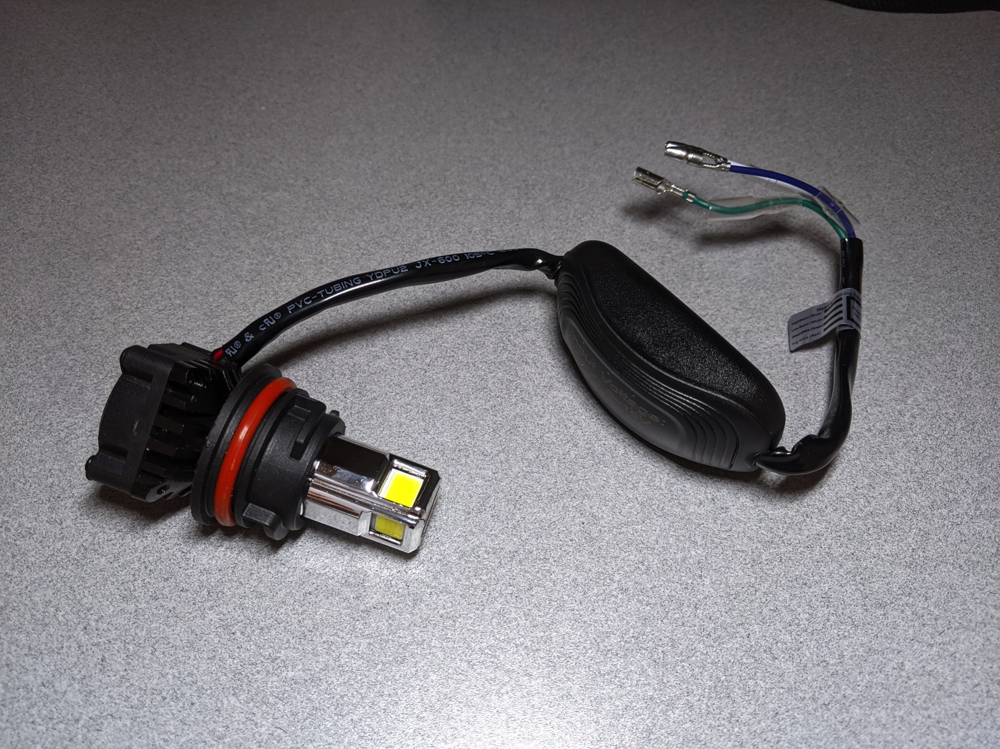不出所料，标签上的中文证实了我的猜想，又是淘宝货
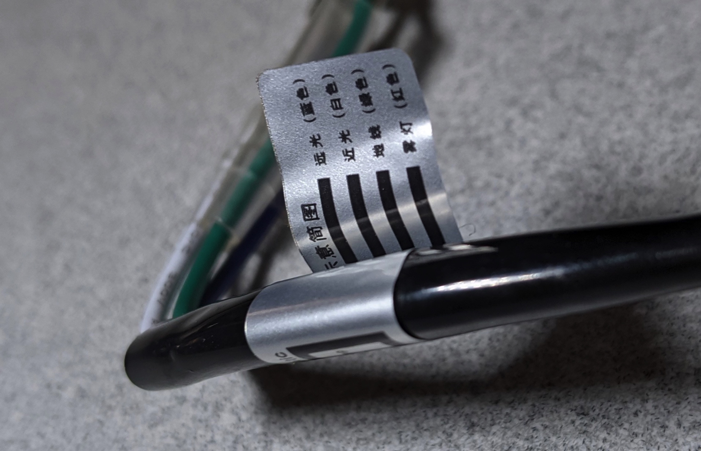拆
拆盖板
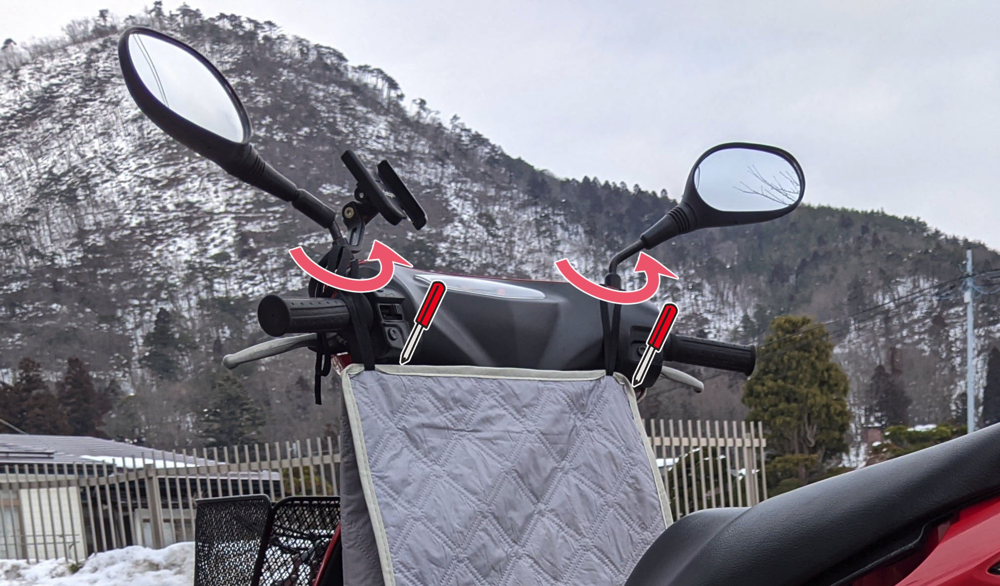 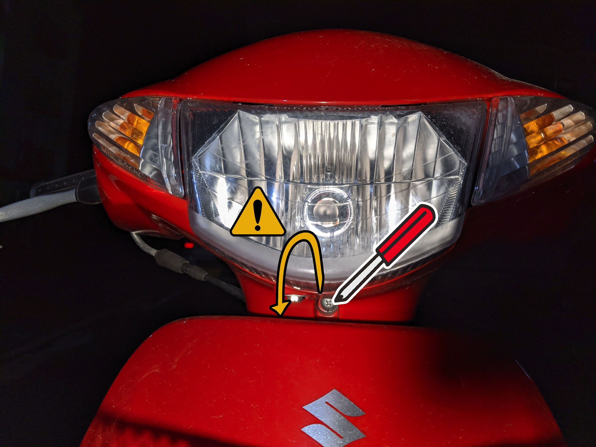要拆的有两个后视镜和三个螺丝，前面的螺丝很容易掉进缝隙里，最好用手指、毛巾之类的塞住缝隙
我这里故意把螺丝弄掉一次，给大家演示如何取出来
盖子拆下来之后的样子，果然，缝隙里有我弄掉的螺丝
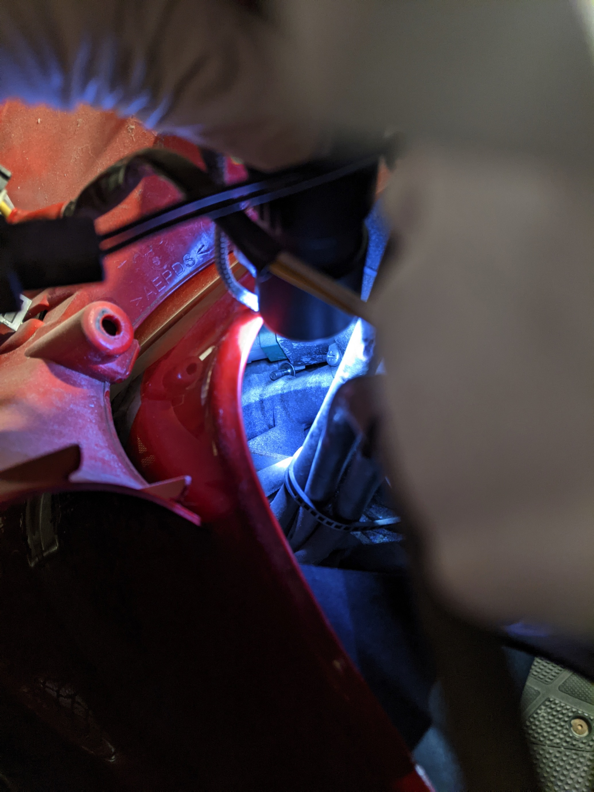吸螺丝
急中生智造了一把吸铁石锤子
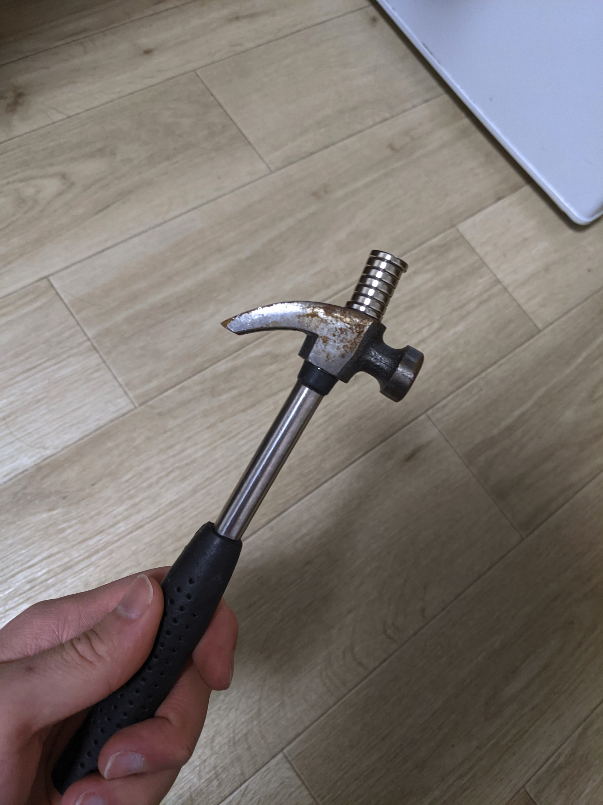
成功吸出来螺丝
我都已经考虑如何把整台车翻过来把螺丝倒出去了（
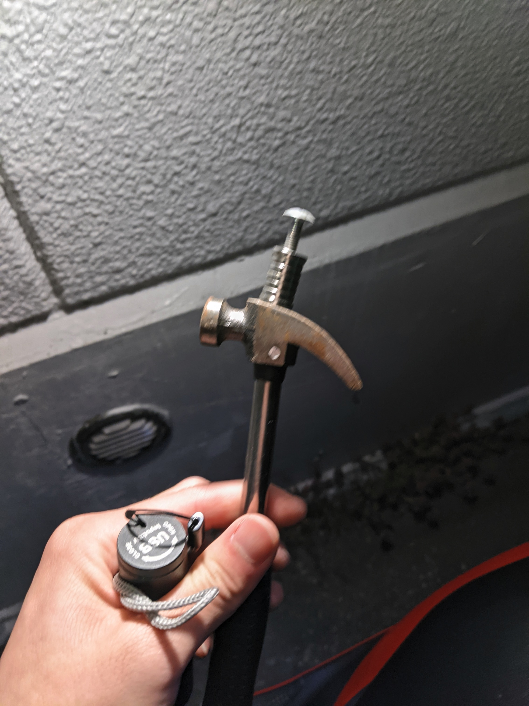
拆灯泡
灯泡向左轻轻一转就可以拿下来
给退休的灯泡一张特写，辛苦您了
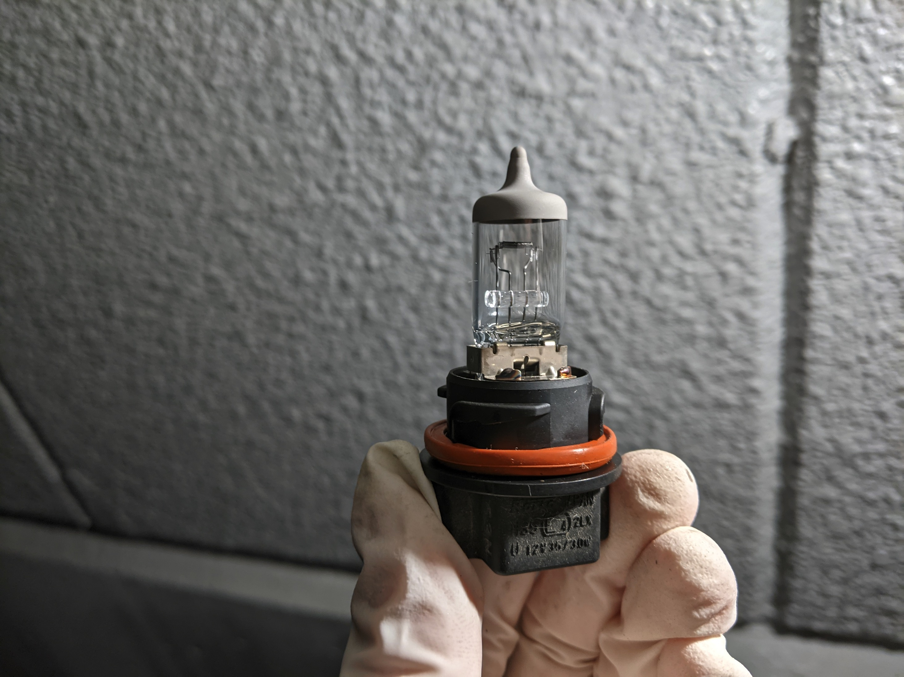
装
插线
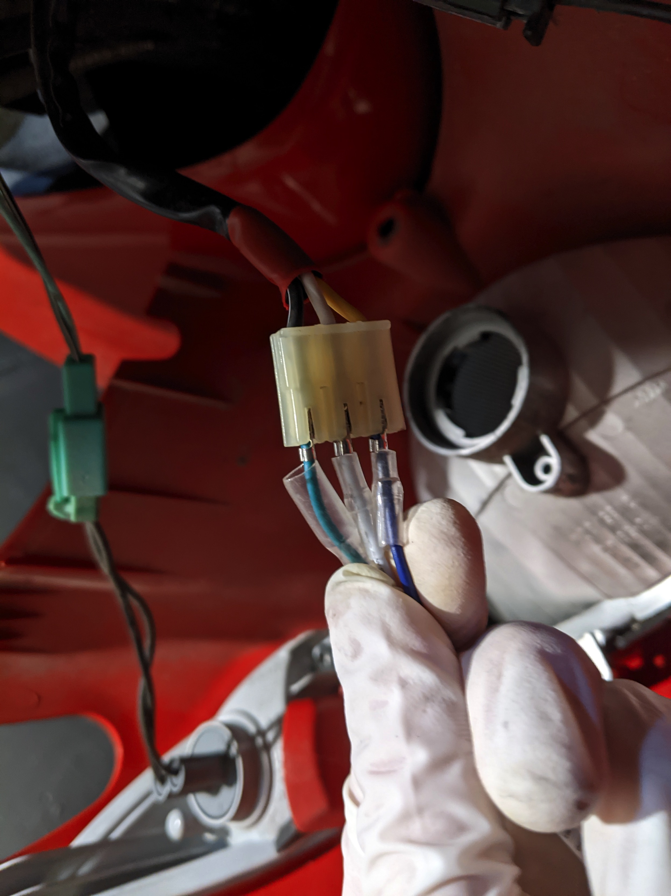随便插上试了一下，近光灯是亮的，远光灯也能开，不错，一把赌对，就这样了，贴绝缘胶带
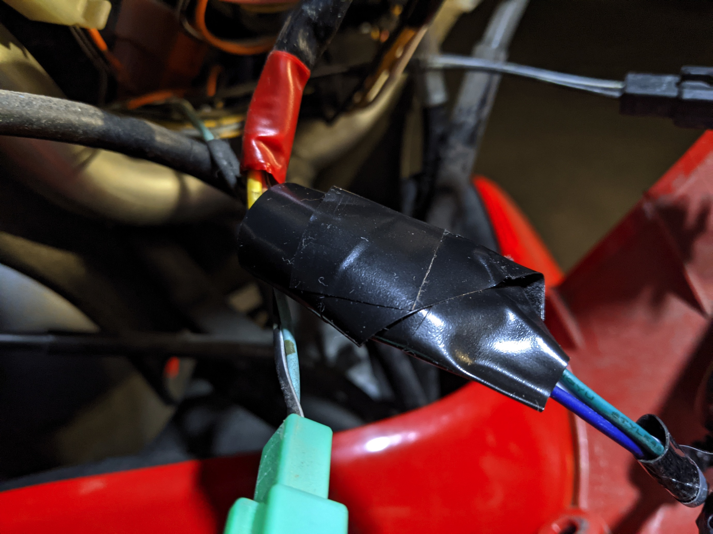这时的我还没有注意到开远光灯的时候近光灯并没有灭而是所有灯一起亮着
装灯泡
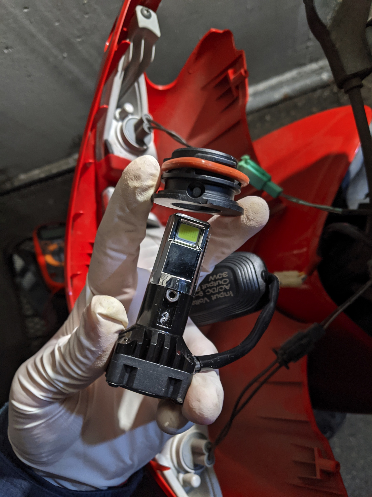 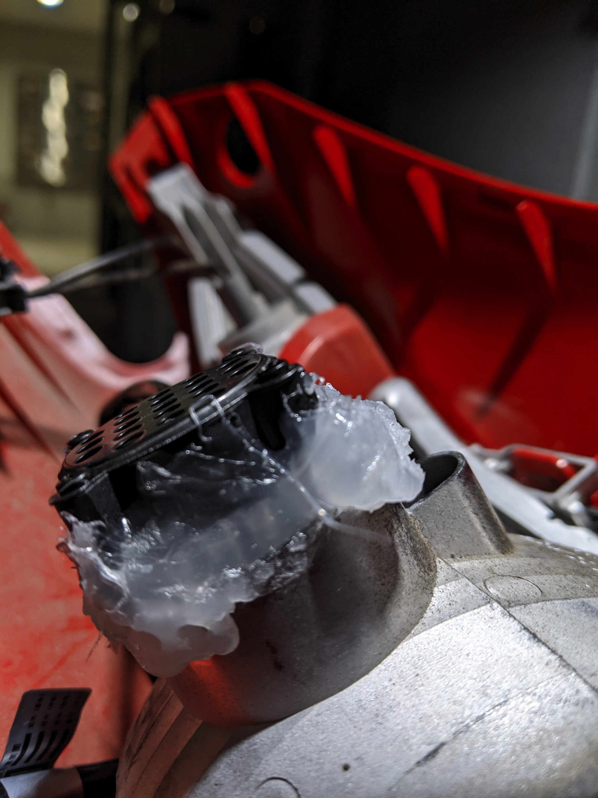接下来该装灯泡了，我买的灯居然比灯罩上的孔大了一圈
只好亡羊补牢，拆掉自带的卡具，用热熔胶固定
希望热熔胶不会在夏天化掉
成品效果：
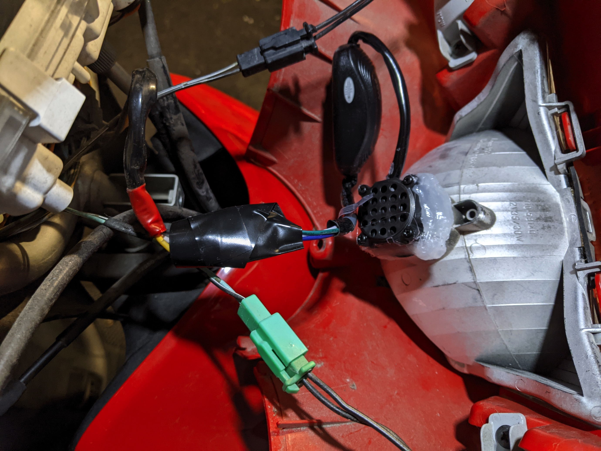完成品
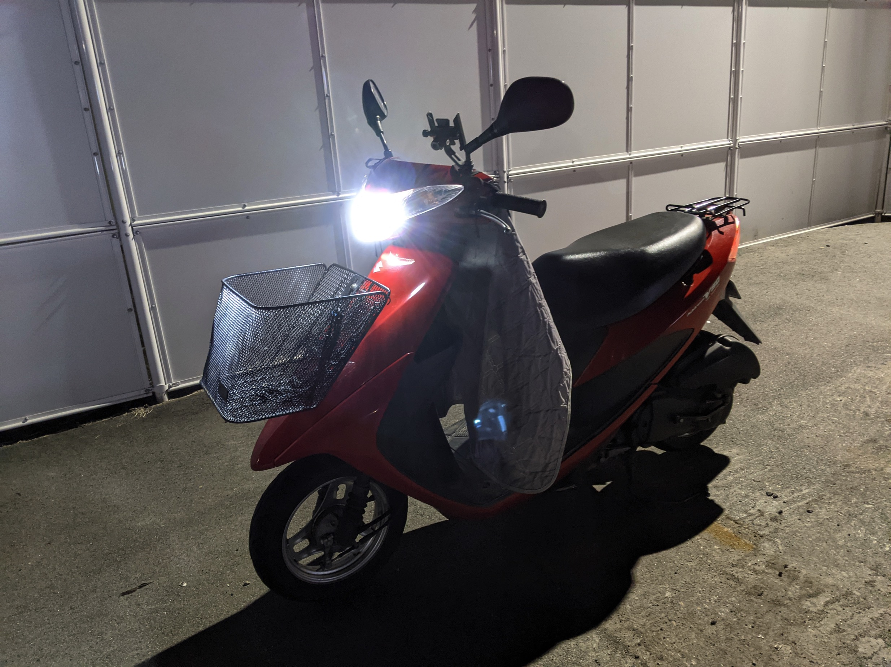正面照看不出近光和远光的区别，就放一张图好了
下面是近光和远光的对比，这近光灯比原来的远光灯还要亮


由于是交流转直流，有点频闪可以理解
还有刚刚说到的接线问题，我突然觉得这样两个灯一起开也挺好的（
另外远光灯的角度可能有点高，不过我可不想再拆开搞一次了，下次坏了再说